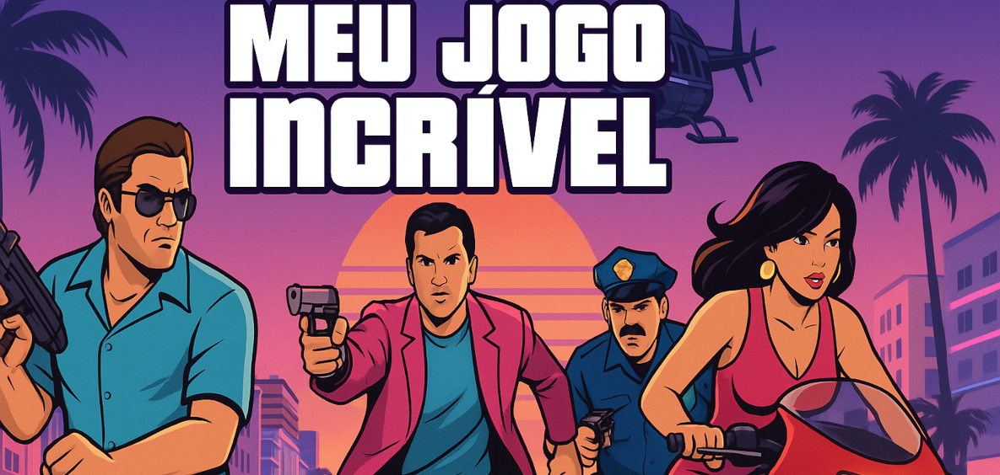

Meu jogo Incrível - Guia Rápido 🎮

Bem-vindo ao guia rápido para dominar ps segredos de "Meu jogo Incrível"! Prepare-se para a aventura © 2025.
Comandos Essenciais de Movimentação
- Mover para Cima: Tecla /Console:
- Mover para Baixo: Tecla /Console:
- Mover para Esquerda: Tecla /Console:
- Mover para Direita: Tecla /Console:
- Pular / Confirmar: /Console: (X)
- Ação Secundária / Cancelar: /Console:
- Menu / Opções: /Console:
- Inventário: /Console:
Sequência de Ataques Especial (Combo "Fúria Pixelada")
- Pressione , (duas vezes rapidamente)
- Em seguida, pressione
- Finalize segurando e apertando
Glossário de Itens do jogo
- Cristal de Energia 💎
- Restaura 100 pontos de energia da sua nave. Use com sabedoria!
- Escudo Defletor Mk.II 🔰
- Oferece proteção temporária contra todos os tipos de dano. Dura 30 segundos.
- XP Doubler ✨
- Dobra a quantidade de Pontoa de Experiência ganhos por 5 minutos.